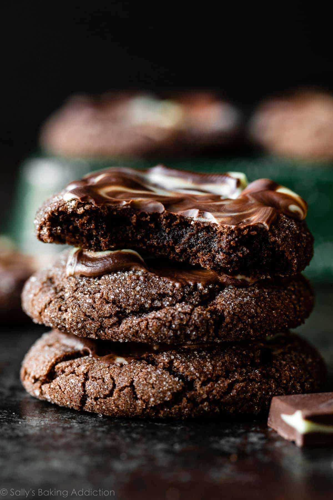

Mind Chocolate Cookies
These Andes mint chocolate cookies are soft and rich,
unapologetically chocolate-y, and crowned with a sweet crème de menthe-flavored “frosting” swirl. What a treat!

Waht are Mint Chocolate cookies?
You don’t need any special extracts or flavorings for these cookies; just a package of Andes mints.
There’s no peppermint extract at all! Do you ever use Andes mints in baking?
These crème de menthe-flavored chocolates are billed as “after-dinner mints,” and they melt in your mouth.
I chop them up to use in recipes like soft Andes mint chocolate chunk cookies and Andes mint fudge… but you don’t need a cutting board for today’s cookies.
Instead, we’re taking advantage of Andes’ meltaway quality, and letting the warm baked cookies do the work to make a delicious chocolate mint topping.
No additional icing recipe to make—it’s such an easy cookie decorating trick, it almost feels like cheating!
Here’s how to “frost” them: After the cookies have baked, allow them to cool on the baking sheet for just 2 minutes, then lightly press an Andes mint in the center of each warm cookie.
Set a timer for 5 minutes, to let the Andes mint chocolate get all soft and melty, then give it a little swirl with a knife or icing spatula. COULDN’T BE EASIER.
Ingredients
Instrictions
- In a large bowl using a handheld or stand mixer fitted with a paddle attachment, beat the butter,
granulated sugar, and brown sugar together on medium high speed until fluffy and light in color, about 2–3 minutes.
Add the egg and vanilla extract, and then beat on high speed until combined. Scrape down the sides and bottom of the bowl as needed.
- In a separate bowl, whisk the flour, cocoa powder, baking soda and salt together until combined.
With the mixer running on low speed, slowly pour into the wet ingredients. Beat on low until combined.
The cookie dough will be quite thick. Switch to high speed and beat in the milk. The cookie dough will be thick and sticky.
- Cover dough tightly and chill in the refrigerator for at least 2 hours and up to 3 days.
Chilling is imperative for this sticky cookie dough.
- Preheat oven to 350°F (177°C). Line large baking sheets with parchment paper or silicone baking mats. Set aside.
- Remove cookie dough from the refrigerator. Scoop and roll dough, 1 heaping Tablespoon (about 25g) of dough each, into balls.
Roll each in granulated sugar and arrange 2–3 inches apart on the baking sheets.
- Bake the cookies for 10–12 minutes or until the edges appear set.
Tip: If they aren’t really spreading by minute 9, remove them from the oven and lightly bang the baking sheet on the counter 2–3x.
This helps initiate that spread. Return to the oven to continue baking.
- Cool cookies for just 2 minutes on the baking sheet. Press 1 Andes chocolate mint into the top of each warm cookie.
Let the chocolate sit for 5 minutes, and then use a knife, icing spatula, or toothpick to gently swirl/spread the melted chocolate.
- Transfer “frosted” cookies to a cooling rack to cool completely. The cookies will slightly deflate as they cool.
Andes chocolate sets in less than an hour, so you can easily store, stack, and transport the cookies.
- Cover leftover cookies tightly and store at room temperature for up to 1 week.